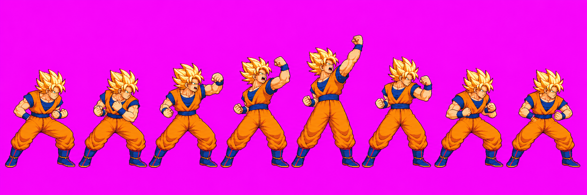
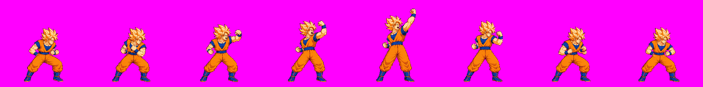
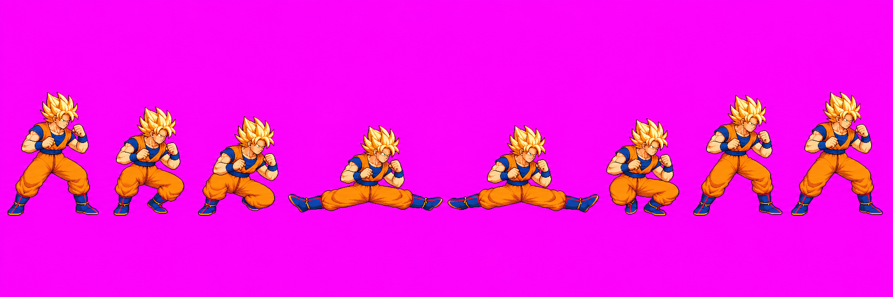
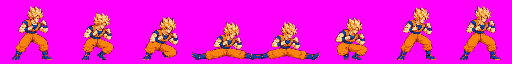

Goku ENG-112 — relay #46
This page shows the packed diagnostic candidates from the authorized redraw round. All six source attempts and prompt receipts remain in raw/_qa_hold/; candidates are unapproved and not in the live pack.
uSmash v05 — attempt 1
Angled up-forward uppercut. Source SHA-256 BC44988A2C98B8A59EDEB09A8116731F8268A30269FBEAA0E869DDD5A2B36A40.


Whole-strip scale is 0.43902. Packed f0 silhouette is 160px vs idle02 about 213px; the packer also reported touching groups and figures split between frames.
dSmash v06 — attempt 2
Two-sided low sweep. Source SHA-256 7B153B644C424A81DC708618DC1FA4813497254A2FD0C61BB5276B3682E2CF0B.


Whole-strip scale is 0.72425. Active f3/f4 clip 5/11px and 7/3px at left/right. Packed head/build reads larger than idle02.
Exact diagnostic evidence
Sheet 6477E8A9820940826E1CF7AC94EFE97AD04EEE43E0FF8ABA4A138AAF80013251; metadata F9BEA0E68BC6AD6402C685513B1D1C316450493D9B59494FBE81221C009C09A4.
Full packed sheet · anims.json · Attempt inventory and provenance · Goku normals review page

Astra final5 HOLD: uSmash packed frame heights are 160, 161, 170, 181, 216, 181, 162, 161px vs idle 213–214px; its f3/f4 boxes are long vertical columns rather than localized uppercut contacts. dSmash f3/f4 clip both boots at x=0..255, and active contacts are misplaced/incomplete. Hidden-joint/limb uncertainty is visual; no numeric segment pass is claimed. Full details: Astra final5 report. The diagnostic manifest's manual-QA placeholders are not evidence and were not copied to production.